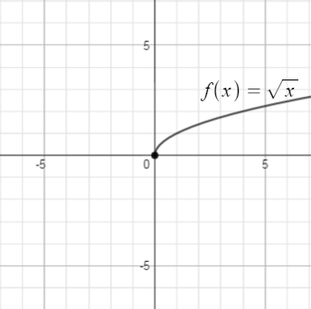
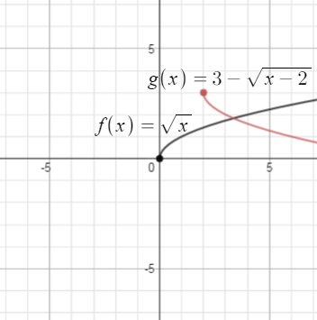
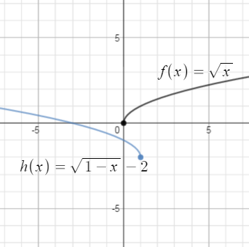

The concept of a radical (or root) is a familiar one which we've used in earlier Units in this course. In this Module, we will start by reviewing properties of radicals and see how they become a way of understanding general power functions. We will brush up on our algebra skills by solving equations involving radicals and consider a new take on composing functions. We will revisit graphing concepts such as finding intercepts and the domain and range for radical functions and general power function.
What is $\sqrt{x^2 + 9}$? Many students will answer quickly that the answer is $(x + 3)$ and have a very difficult time believing this answer is wrong. But it is wrong.
For positive values of $x$, $\sqrt{x^2}$ is $x$ and $\sqrt{9}$ is $3$, but $\sqrt{x^2 + 9}$ is not $(x + 3).$
Why not? Remember that $\sqrt{x^2 + 9}$ is asking a question: "what squared gives the answer $x^2 + 9$?" So $(x + 3)$ is not an answer, because $(x + 3)^2 = x^2 + 6x+9$, not $x^2 + 9$.
As an example, suppose $x = 4$. Substituting into $\sqrt{x^2 + 9}$ gives $\sqrt{4^2 + 9} = \sqrt{25} = 5$. But substituting into $(x + 3)$ gives, $(4 + 3) = 7$. That is, when $x = 4$: $$\sqrt{x^2 + 9} = \sqrt{4^2 + 9} = \sqrt{25} = 5\neq 7 = (4+3)=(x+3)$$
NOTE: If two numbers are added or subtracted under a square root, you cannot split them up. In symbols: $\sqrt{a + b} \neq \sqrt{a} + \sqrt{b}$ or, to put it another way, $\sqrt{x^2 + y^2} \neq x + y$
.$\sqrt{x^2 + 9}$ cannot, in fact, be simplified at all. It is a perfectly valid function, but cannot be rewritten in a simpler form.
How about $\sqrt{9x^2}$? By analogy to the previous discussion, you might expect that this cannot be simplified either. But in fact, it can be simplified:
$\sqrt{9x^2} = 3x$
Why? Again, $\sqrt{9x^2}$ is asking “what squared gives the answer $9x^2$?” The answer is $3x$ because $(3x)^2 = 9x^2$.
Similarly, $\displaystyle \sqrt{\frac{9}{x^2}} = \frac{3}{x}$ , because $\displaystyle \left(\frac{3}{x}\right)^2 = \frac{9}{x^2}$.
There are radicals (or roots) other than a square root: $\sqrt[3]{27}$ means "what number raised to the third power gives $27$". In this case, $3^3=27$ so $\sqrt[3]{27} = 3$. Similarly, $\sqrt[4]{16} = 2$.
| Zero exponents | Negative exponents | Fractional exponents ($1/n$) | Fractional exponents ($m/n$) |
| Always 1 | Go in the denominator | Act as a radical | $m$ is an exponent, $n$ is a radical |
| $7^0 = 1$ | $7^{-3} = \frac{1}{7^3} = \frac{1}{343}$ | $9^{1/2} = \sqrt{9} = 3$ | $8^{2/3}=\sqrt[3]{8^2}=4$ or $(\sqrt[3]{8})^2=4$
The order doesn't matter. |
| $9^0=1$ | $x^{-5} = \frac{1}{x^5}$ | $2^{1/2} = \sqrt{2}$ | $8^{3/2} = \sqrt{8^3}$ or $(\sqrt{8})^3$ |
Note that you can combine these definitions. For instance, $8^{-2/3}$ is a negative, fractional exponent. The negative exponent means, as always, "put me in the denominator." So we can write: $$8^{-2/3} = \frac{1}{8^{2/3}} = \frac{1}{(\sqrt[3]{8})^2} = \frac{1}{2^2} = \frac{1}{4}$$
Whenever you subtract $1$ from the exponent, you divide the answer by $19.$
As I said earlier, we want the behavior of our new exponents to be consistent with the behavior of the old (positive-integer) exponents. So we can continue this progression as follows: $$ \begin{align} 19^1 & =19 \\ 19^0 & =\frac{19}{19} = 1 \\ 19^{-1} & = \frac{1}{19} \\ 19^{-2} & = \frac{\frac{1}{19}}{19} = \frac{1}{19^2}\\ \end{align}$$ $\ldots$ and so on. We arrive at our definitions that anything to the zero power is $1$ and negative exponents go to the denominator by simply requiring this progression to be consistent.
More rigorously, we can find all our exponent definitions by using the laws of exponents. For instance, what is $4^0$? We can approach this question indirectly by asking: what is $\dfrac{4^2}{4^2}$?
Examples: When the exponent is not a positive integer
| Zero exponents | Negative exponents | Fractional exponents ($1/n$) | Fractional exponents ($m/n$) |
| Always 1 | Go in the denominator | Act as a radical | $m$ is an exponent, $n$ is a radical |
| $\frac{4^2}{4^2} = 4^{2-2} = 0$ but $\frac{4^2}{4^2} =\frac{16}{16} = 1$ so $4^0$ must be $1$! |
$\frac{10^1}{10^3} = 10^{1-3} = 10^{-2}$, but $\frac{10^1}{10^3} = \frac{10}{10 \cdot 10 \cdot 10} = \frac{1}{10 \cdot 10}$ so $10^{-2}$ must be $\frac{1}{10^2}$. |
$(9^{\frac{1}{2}})^2 = 9^{\frac{1}{2} \cdot 2} = 9^1 = 9$. So, what is $9^{\frac{1}{2}}$? Well, when you square it, you get $9$. So it must be $\sqrt{9}$, or $3$! |
$8^{\frac{2}{3}}=(8^{\frac{1}{3}})^2=(\sqrt[3]{8})^2$ or $8^{\frac{2}{3}}=(8^2)^{\frac{1}{3}}=\sqrt[3]{8^2}$ |
Now that we have a firm understanding of how to deal with expressions like $x^{n/m}$ where $n$ and $m$ are integers, we could extend the idea to expressions like $x^r$ where $r$ is a real number. We will demonstrate how such a critter would be calculated, but not go into the mathematical underpinnings for the expression in this course. Let's see how one would go about calculating $2^\pi$. Recall that $\pi \approx 3.14159 \dots$. Consider $$ \begin{align} 2^3 & =8 \\ 2^{3.1} & =2^{\frac{31}{10}} = \sqrt[10]{2^{31}} = 8.5741877 \dots \\ 2^{3.14} & =2^{\frac{314}{100}} = \sqrt[100]{2^{314}} = 8.815241 \dots \\ 2^{3.141} & =2^{\frac{3141}{1000}} = \sqrt[1000]{2^{3141}} = 8.821353 \dots \\ 2^{3.1415} & =2^{\frac{31415}{10000}} = \sqrt[10000]{2^{31415}} = 8.824411 \dots \\ 2^{3.14159} & =2^{\frac{314159}{100000}} = \sqrt[100000]{2^{314159}} = 8.824962 \dots \\ \end{align}$$ As we use more digits of $\pi$ the digits of the result begin to stabilize to $8.824 \dots $ after the last calculation. So, we won't ever get an exact value for $2^\pi$ since $\pi$'s digits don't repeat, but we can get as accurate a number as we need by using enough digits to calculate $2^\pi$.
We now have the idea of the general power function:
Example 3C-1 Evaluate $f(x) = \sqrt[4]{x-2}$ at the following points;
When solving equations that involve radicals, begin by asking yourself: is there an $x$ under the square root? The answer to this question will determine the way you approach the problem.
If there is not an $x$ under the square root—if only numbers are under the radicals—you can solve much the same way you would solve with no radicals at all.
Example 3C-2:Solve a radical equation with no variables Under square root
| $\sqrt{2}x + 5 = 7 - \sqrt{3}x$ | Notice that there are no variables under a radical |
| $\sqrt{2}x +\sqrt{3}x = 7 - 5$ | Get everything with an $x$ on one side, everything else on the other |
| $x(\sqrt{2} +\sqrt{3})= 2$ | Factor out the $x$ |
| $x = \dfrac{2}{\sqrt{2}+\sqrt{3}}$ | Divide, to solve for $x$ |
The key thing to note about such problems is that you do not have to square both sides of the equation. $\sqrt{ 2}$ may look ugly, but it is just a number—you could find it on your calculator if you wanted to—it functions in the equation just the way that the number $10$, or $\frac{1}{3}$ , or $\pi$ would.
If there is an $x$ under the square root, the problem is completely different. You will have to square both sides to get rid of the radical. However, there are two important notes about this kind of problem.
Both of these principles are demonstrated in the following example.
Example 3C-3: Solve a radical equation with the variable under the square root:
| $\sqrt{x + 2} + 3x = 5x + 1$ | Here, there is a variable under radical |
| $\sqrt{x + 2} = 2x + 1$ | Isolate the radical on one side of the equation by subtracting $3x$ |
| $x + 2 = (2x + 1)^2$ | Now, square both sides to remove the radical |
| $x + 2 = 4x^2 + 4x + 1$ | Multiply out. Hey, it looks like a quadratic equation now! |
| $0 = 4x^2 + 3x - 1$ | As always with quadratics, get everything on one side. |
| $0 = (4x - 1) (x + 1)$ | Factor (the easiest way to solve quadratic equations) |
| $x = \frac{1}{4}$ or $x = -1$ | Two solutions. Do they work? Check in the original equation! |
| Check $x = \frac{1}{4}$ | Check $x = -1$ |
| $\sqrt{\frac{1}{4} + 2} + 3(\frac{1}{4})$ $?=?$ $5(\frac{1}{4})+ 1$ | $\sqrt{-1 + 2} + 3 (-1)$ $?=?$ $5 (-1) + 1$ |
| $\sqrt{\frac{1}{4} + \frac{8}{4}}+ \frac{3}{4}$ $?=?$ $\frac{5}{4} + 1$ | $\sqrt{1} - 3$ $?=?$ $-5 + 1$ |
| $\sqrt{\frac{9}{4}}+\frac{3}{4}$ $?=?$ $\frac{5}{4} + \frac{4}{4}$ | $1 - 3$ $?=?$ $-5 + 1$ |
| $\frac{3}{2} + \frac{3}{4}$ $?=?$ $\frac{9}{4}$ | $-2 \neq -4$ Not equal! |
| $\frac{9}{4} = \frac{9}{4}$ This one works. |
So the algebra yielded two solutions: $\frac{1}{4}$ and $–1$. Checking, however, we discover that only the first solution is valid. This problem demonstrates how important it is to check solutions whenever squaring both sides of an equation.
If variables under the radical occur more than once, you will have to go through this procedure multiple times. Each time, you isolate a radical and then square both sides.
Why is it that—when squaring both sides of an equation—perfectly good algebra can lead to invalid solutions? The answer is in the redundancy of squaring. Consider the following equation:
$-5 = 5$ is false. But square both sides, and we get...
$25 = 25$ which is true. So squaring both sides of a false equation can produce a true equation.
To see how this affects our equations, try plugging $x = -1$ into the various steps of Example 3C-3.
| $\sqrt{x + 2} + 3x = 5x + 1$ | Does $x = -1$ work here? No, it does not. |
| $\sqrt{x + 2} = 2x + 1$ | How about here? No, $x = -1$ produces the false equation $1 = –1$. |
| $x + 2 = (2x + 1)^2$ | Suddenly, $x = -1$ works. (Try it!) |
When we squared both sides, we "lost" the difference between $1$ and $–1$, and they "became equal." From here on, when we solved, we ended up with $x = -1$ as a valid solution. So, the moral of the story, is if you square an equation in the course of solving it, you will need to check your answer to make sure a false one didn't sneak in.
When we consider functions like $f(x) = \sqrt[n]{x}$ and $g(x) = x^{1/n}$ it is clear that the domain and range of these sorts of functions depend on $n$.
Example 3C-4 Find the domain and range of $y =f(x)$ and $y=g(x)$ given below:
Now let's try our hand at finding intercepts:
Example 3C-5 Find the intercepts for $y =f(x)$ and $y=g(x)$:
| The $y$-intercept is where $x=0$. But, $f(0)$ is not defined. $f(x)$ has no $y$-intercept. |
| The $x$-intercept is where $y=0$. Consider: $0 = \dfrac{1}{x^{2/3}}$. The numerator is always $1$ and the fraction will never be zero. $f(x)$ has no $x$-intercept. |
| $g(0) = \sqrt{0 + 1} = \sqrt{1} = 1$. The $y$-intercept is at $y=1$. |
| Solve: $0 = \sqrt{x + 1}$. Square both sides: $0 = x+1$, so the $x$-intercept is at $x=-1$. |
In a Module 1C, we considered transformations of functions. It's as good a time as any to review them.
Example 3C-6
| Lets start with the graph of $f(x) = \sqrt{x}$: |  |
| $g(x) = 3-\sqrt{x-2}$ shifts the graph of $f(x)$ to the right $2$, up $3$ and flips it on the horizontal axis: |  |
| $h(x) = \sqrt{1-x}-2$ flips $f(x)$ about the vertical axis, shifts it $1$ to the left and $2$ down; |  |
This section would not be complete with an application (i.e. word problem).
Example 3C-7 A basketball player's hang time is the time spent in the air when shooting a basket. Hang time can be estimated by the model $$h = \frac{\sqrt{v}}{2}$$ where $h$ is the hang time in seconds and $v$ the vertical distance of the jump in feet. Suppose Boo is a member of the C of I basketball team. If Boo's hang time for a slam dunk is 1.15 seconds, how high did Boo jump? Solution: We know that $h = 1.15$ so $$\begin{align} 1.15 & = \frac{\sqrt{v}}{2} \\ 2(1.15) & = \sqrt{v} \\ (2.30)^2 & = v \\ \mbox{So, } v & = 5.29 \end{align}$$ Answer: Boo jumped 5.29 ft high while making the slam dunk. Go Yotes!
Example 3C-8 For $h(x) = \dfrac{1}{\sqrt[3]{x+1}}$, find two functions, $f(x)$ and $g(x)$ so that $h(x) = (f \circ g)(x)$. In other words, we want to deconstruct $h(x)$ into two functions. Actually, there is more than one set of functions that work. For now, it doesn't matter what the two functions are as long as they make $h(x)$. It basically takes a little educated guessing: